首页
英文站名、中文品牌标题、系列名与正文全部为衬线，系列图与页面的笔性一致。
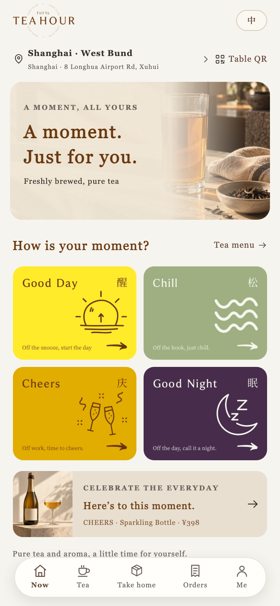
点单流程
茶单、商品详情、购物袋、结算。衬线字面更宽，需要关注换行与信息密度。
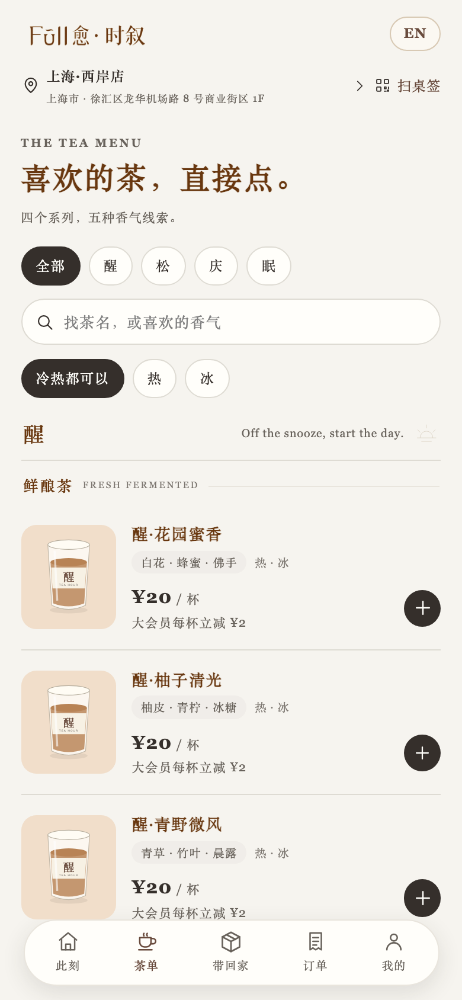
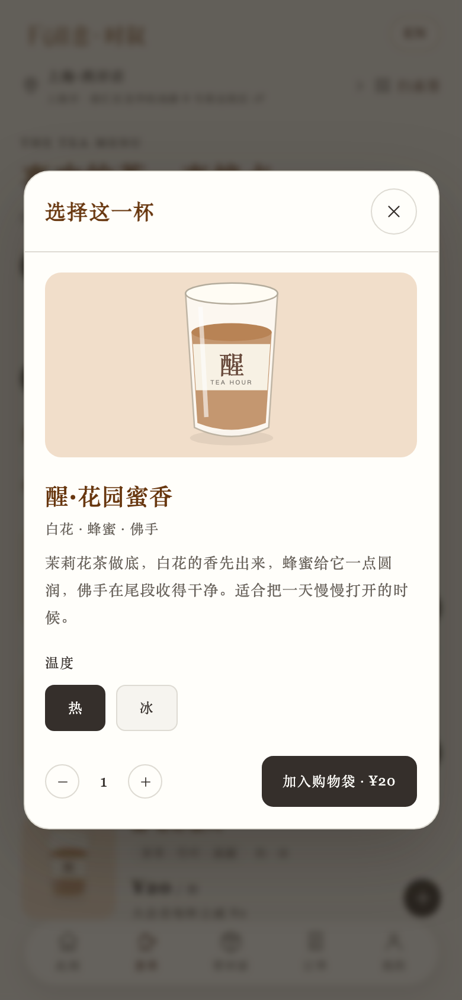
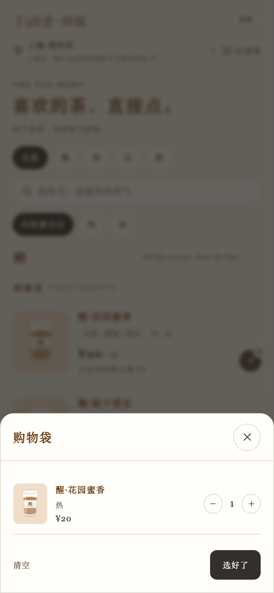
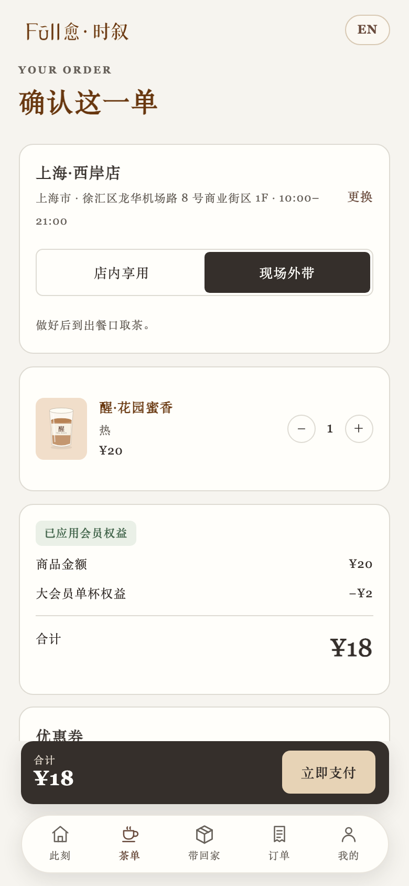
我的 · 订单
个人中心与订单列表的信息密度最高，衬线的可读性与数字形态在这里最受考验。
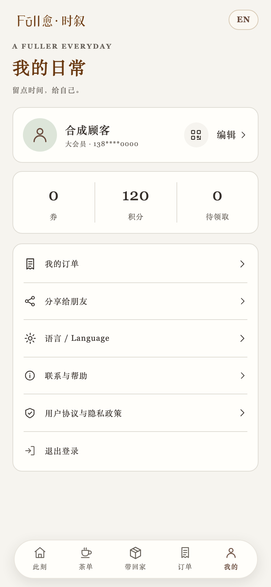
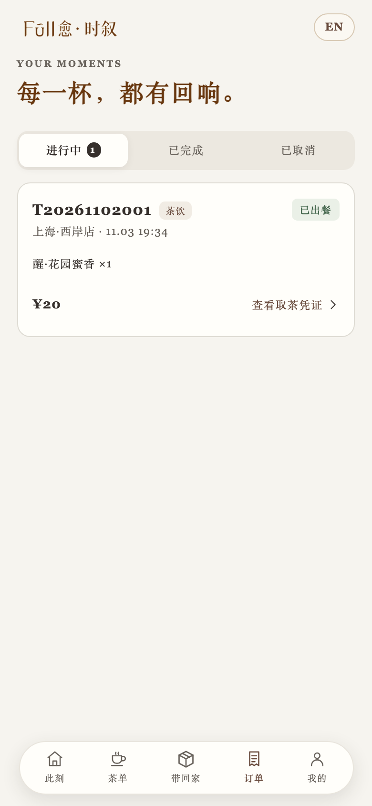
取茶凭证与数字修正
衬线方案的核心问题出现在数字上。Georgia 默认使用旧式数字，0 看起来像小写 o，取餐码 A0 会被误读为 Ao；订单号、金额、时间也会高低不齐。
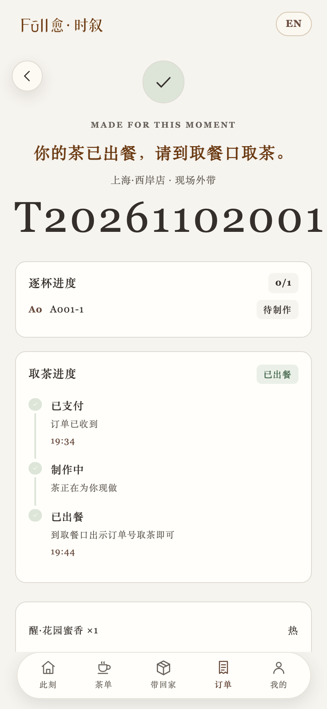
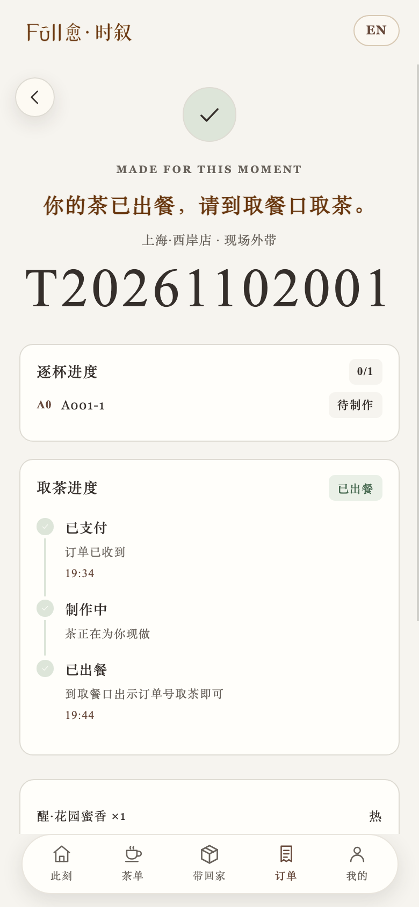
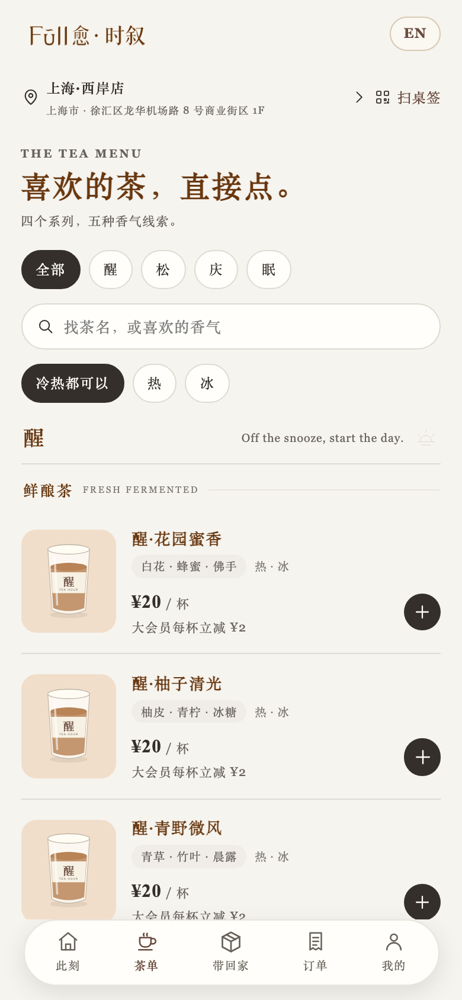
修正方式
正文保持 Songti SC / Georgia，仅对号码容器（
正文保持 Songti SC / Georgia，仅对号码容器（
.cup-no、.order-number、.pickup-code、.price、计数与时间）切换为 Times New Roman / Songti SC，并显式关闭 Georgia 的旧式数字。修正脚本必须同时命中容器内的嵌套 span，否则会被全局规则覆盖。
与当前版本对照
当前线上版本：标题与品名是衬线，正文与按钮是无衬线。全衬线方案把正文也统一为衬线，整体更编辑、更慢，但信息密度更高的页面会显得更软。
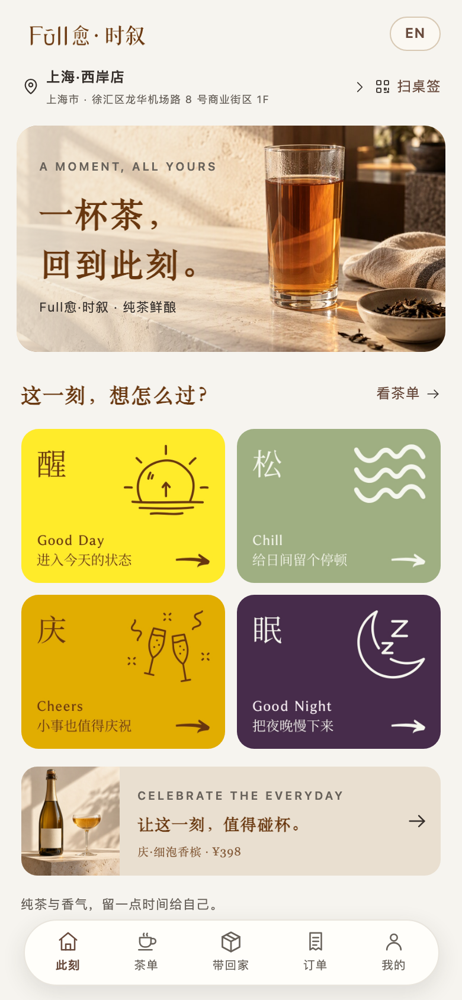
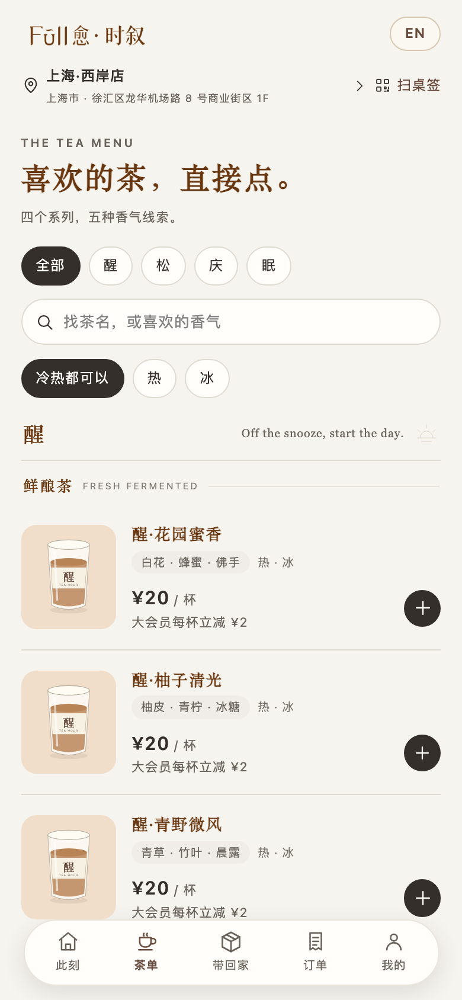
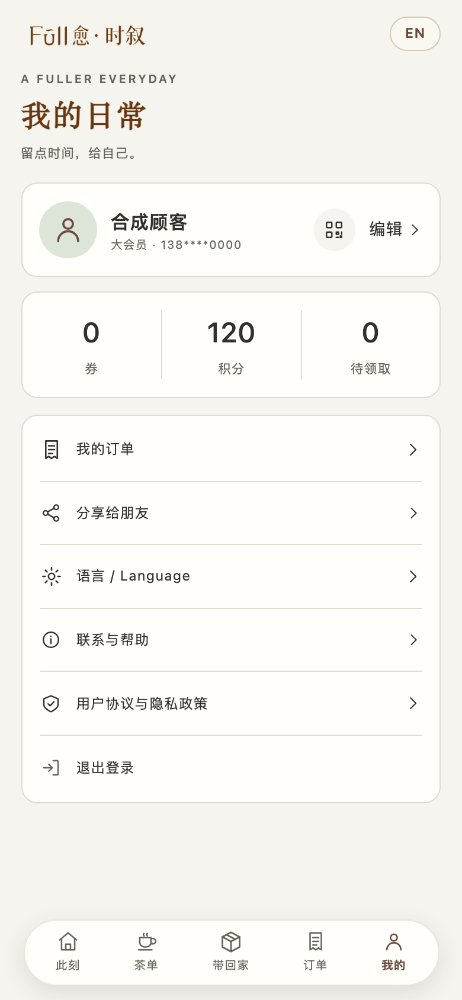
结论
全衬线方向上更统一，和四张系列图站在同一条笔性上；代价是数字形态与版面宽度。若采用，建议：
1. 正文衬线可以保留。品名、描述、弹层标题、回执说明用宋体，气质更整。
2. 数字与码必须换字。取餐码、订单号、金额、时间、计数切到 Times New Roman / Songti SC 的等高数字，否则 A0 会被读成 Ao。
3. 按钮与高频操作保留无衬线更稳。如果担心操作区变软，可以只让内容衬线、按钮与标签维持苹方，形成“读的衬线、点的无衬线”的分工。
4. 需要重排。结算页营业时间已出现换行，采用前要按衬线字宽复核一遍行宽与换行点。
2. 数字与码必须换字。取餐码、订单号、金额、时间、计数切到 Times New Roman / Songti SC 的等高数字，否则 A0 会被读成 Ao。
3. 按钮与高频操作保留无衬线更稳。如果担心操作区变软，可以只让内容衬线、按钮与标签维持苹方，形成“读的衬线、点的无衬线”的分工。
4. 需要重排。结算页营业时间已出现换行，采用前要按衬线字宽复核一遍行宽与换行点。